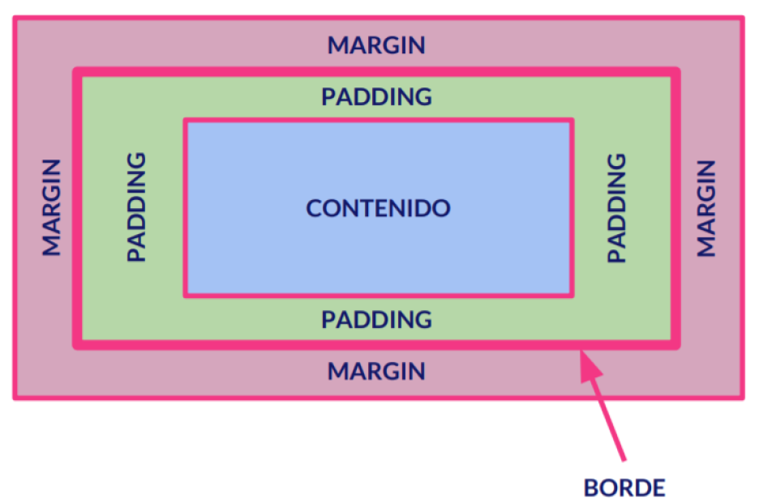

Colores en CSS
Las propiedades que podemos utilizar en CSS para aplicar colores, son las siguientes:
- color:Cambiar el color de texto en CSS
- background-color:Camabiar el fondo del color de un elemento.
A parte de esto, debemos tener en cuenta que podemos poner de varias maneras
colores en CSS:
- Palabra Clave: por ejemplo: color: red, blue, violet, etc.
background-color:grey.--> El propio nombre del color.
- Esquema rgb(red, green, blue): rgb(255,255,48);
- Esquema rgba(red, green, blue, alpha): rgba(255,255,48, valores que van del 0-1).
Donde el 1 es la capa más oscura, y el 0 la más clara.
- Esquema RGB Hexadecimal: #RRGGBB --> #FF0055
- Esquema RGB Hexadecimal Abreviado: #RGB --> #F05
Unidades en CSS: Absolutas y Relativas
- Unidades Absolutas: Son las unidades que tienen un valor de medida fija.
Son unidades poco flexibles, y son poco adaptables a resoluciones para diferentes
tamaños de pantallas. P.E: cm, picas, in (pulgas), puntos (pt), etc.
- Unidades Relativas: Son aquellas que tienen una medida más flexible, y sobre todo,
adaptables a las resoluciones, y por lo tanto, son las que se suelen utilizar por lo general
para la programación / maquetación web. P.E. em (16px), rem, px (pixel), % (porcentajes)...
- width: que se utilizará para dar un tamaño de anchura a nuestro elemento
- height: que se utilizará para dar un tamaño de altura a nuestro elemento
Modelos de Cajas en CSS
Todos los elementos HTML, cuando creamos páginas web, están dentro de lo que se conocen
como cajas o contenedores de contenido.
Las cajas que vamos a utilizar, son principalmente div (cajas) o etiquetas semánticas
como pueden ser: nav, header, footer, aside, article, etc.
Hasta ahora, utilizábamos tablas para maquetar, pero estas son poco flexibles y están
muy limitadas a la hora de poderlas ajustar a distintas resoluciones de pantallas.
Por lo tanto, a la hora de realizar una maquetación web, lo que vamos a utilizar será
este tipo de cajas (div) con una serie de propiedades que son las que veremos a continuación
para poder establecer la organización de los elementos que nosotros queramos
Así, las propiedades que podemos utilizar son las siguientes:
- margin: corresponde al margen existente entre el borde exterior de nuestra caja/elemento
y nuestro navegador.
- padding: correponde al margen interior de nuestra caja, es decir, el espacio existente entre
el contenido y el borde de nuestro elemento contenedores
- contenido: son las etiquetas que van a ir dentro de nuestra caja o elemento contenedor

Ejemplo de Div aplicando margin y padding
Esto es un ejemplo de margin y padding aplicado a un div. adsfasdfadsfadsadsfadfafadsfadsfadfadfaasdfs